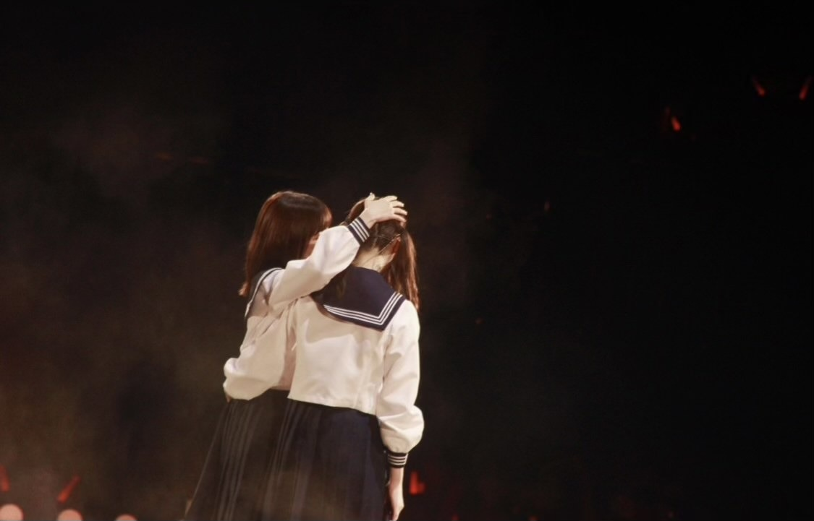

2021/0713Tueありがとうっ(o・・o)
松村沙友理です
本日7月13日をもちまして
乃木坂46を卒業します。
たくさんの応援ありがとうございました。
秋元先生に書いてもらった
さ〜ゆ〜Ready?の歌詞の通り
完全燃焼できました！
みなさんのおかげで
幸せなアイドル人生でした。
乃木坂46の一員であったことを誇りに
さゆりんご頑張ります
これからも応援よろしくお願いします。
自分の思いの丈は
卒業記念写真集の
ロングインタビューと
手書きのメッセージに込めました。
ここでは、言いづらい事も
全部詰め込みました。
手に取って読んでくださる方に
伝わりますように
本当にありがとうございました。
個人のHPも開設しました。
よろしくお願いします！
またお会いできる日を楽しみにしております♡



2021/07/13 23:59
コメント(596)
まちゅ
10年間お疲れ様！ありがとう！！
そして卒業おめでとう！！
ホントにまちゅの見せてくれる姿は楽しいことばっかりで、面白くて可愛くて、最高でした！！
だから最後のまちゅの笑顔も涙も、こちらを素直に笑顔にさせてくれたし、そんな笑顔が逆に寂しさ倍増させたりで最後は感情が大変でした(笑)
でも、ホントに10年間の中でも大活躍で、この先も個人として頑張るとのこで気持ちよく卒業おめでとうを言えます！
ホントに面白かったし可愛かったぁ！楽しかったぁ！
ありがとうございました！
まちゅのこれからを心より応援しています！！
ご卒業、おめでとうございます(^O^)
10年間お疲れ様！ありがとう！！
そして卒業おめでとう！！
ホントにまちゅの見せてくれる姿は楽しいことばっかりで、面白くて可愛くて、最高でした！！
だから最後のまちゅの笑顔も涙も、こちらを素直に笑顔にさせてくれたし、そんな笑顔が逆に寂しさ倍増させたりで最後は感情が大変でした(笑)
でも、ホントに10年間の中でも大活躍で、この先も個人として頑張るとのこで気持ちよく卒業おめでとうを言えます！
ホントに面白かったし可愛かったぁ！楽しかったぁ！
ありがとうございました！
まちゅのこれからを心より応援しています！！
ご卒業、おめでとうございます(^O^)
御卒業おめでとうございます。乃木坂46としての最後の時間をファンに向けた配信に使ってくれたこと、とても嬉しかったです。
これから新たなスタートを切るまちゅの未来が、笑顔溢れる素敵なものになることを願ってやみません。
さゆりんご、完全燃焼！まちゅを応援できて、本当に幸せです(*^^*)
ありがとう！
これから新たなスタートを切るまちゅの未来が、笑顔溢れる素敵なものになることを願ってやみません。
さゆりんご、完全燃焼！まちゅを応援できて、本当に幸せです(*^^*)
ありがとう！
さゆりん
10年間ありがとう
さゆりんがいたから頑張れました
これからも、応援し続けます
ありがとう
10年間ありがとう
さゆりんがいたから頑張れました
これからも、応援し続けます
ありがとう
10年間お疲れ様でした。さゆりんの笑顔、可愛らしい性格、仕草、その全てに惹かれたことがきっかけで乃木坂46を好きになりました。本当にありがとうございます。
ブログの写真を眺めているだけで自然と涙が溢れました。どれだけさゆりんの存在が大きかったかを感じました。これからは、松村沙友理を全力で応援します。これからもさゆりんらしく頑張ってください！！
ブログの写真を眺めているだけで自然と涙が溢れました。どれだけさゆりんの存在が大きかったかを感じました。これからは、松村沙友理を全力で応援します。これからもさゆりんらしく頑張ってください！！
さゆりん、10年間お疲れ様でした！
アイドルになってくれて、乃木坂46にて入ってくれて本当にありがとう！
さゆりんの笑顔に癒やされ、元気づけられ、勇気づけられ、アイドル『松村沙友理』を応援できてとても楽しかったよ！
さゆりんは僕達ファンのこと幸せにしてるよ。
これからも自分を大切にさゆりんはさゆりんらしくね！テレビや雑誌、色んなフィールドで活躍、輝いている姿を楽しみにしています！
僕も遠くから陰ながらもさゆりんのこと応援していくよ！！
改めて、ありがとう。卒業おめでとう！これからもさゆりんの毎日が笑顔であふれますように！
アイドルになってくれて、乃木坂46にて入ってくれて本当にありがとう！
さゆりんの笑顔に癒やされ、元気づけられ、勇気づけられ、アイドル『松村沙友理』を応援できてとても楽しかったよ！
さゆりんは僕達ファンのこと幸せにしてるよ。
これからも自分を大切にさゆりんはさゆりんらしくね！テレビや雑誌、色んなフィールドで活躍、輝いている姿を楽しみにしています！
僕も遠くから陰ながらもさゆりんのこと応援していくよ！！
改めて、ありがとう。卒業おめでとう！これからもさゆりんの毎日が笑顔であふれますように！
まっちゅんありがとう
卒業おめでとう！これからもずっと応援してます！！
こんなにギリギリまでアイドルしてくれて嬉しいです
まっちゃんの笑顔に癒されてきました！
大大大好きです！！
卒業おめでとう！これからもずっと応援してます！！
こんなにギリギリまでアイドルしてくれて嬉しいです
まっちゃんの笑顔に癒されてきました！
大大大好きです！！
さゆりん卒業おめでとう！
大好きです。これからも応援します。
さゆりんごパンチは本当に痛かったので、一生忘れません（笑
またどこかで会いましょうね！アディオス！
大好きです。これからも応援します。
さゆりんごパンチは本当に痛かったので、一生忘れません（笑
またどこかで会いましょうね！アディオス！
今日までありがとうございました。明日からもさゆりんごを応援していきたいと思います。どこかできっと会えると信じて待ってます！
まちゅお疲れ様♡
卒業おめでとう！！
沢山の幸せをありがとう♡
ずっとずっと大好きです。
乃木坂に入ってくれて、アイドルになってくれてありがとう。
これからもずっと応援しています！！！
本当にありがとう(^^)
卒業おめでとう！！
沢山の幸せをありがとう♡
ずっとずっと大好きです。
乃木坂に入ってくれて、アイドルになってくれてありがとう。
これからもずっと応援しています！！！
本当にありがとう(^^)
まっちゅん、こんばんはー\( 'ω')/
10年間！！ほんまにありがとう！！\(＾０＾)/
日付が変わったから昨日やけど、乃木坂46卒業おめでとう！！！！(*ﾟ▽ﾟﾉﾉﾞ☆ﾊﾟﾁﾊﾟﾁ
変化していくまっちゅんを、これからも応援してくよー！！！！
長い間お疲れさまっちゅん

10年間！！ほんまにありがとう！！\(＾０＾)/
日付が変わったから昨日やけど、乃木坂46卒業おめでとう！！！！(*ﾟ▽ﾟﾉﾉﾞ☆ﾊﾟﾁﾊﾟﾁ
変化していくまっちゅんを、これからも応援してくよー！！！！
長い間お疲れさまっちゅん
まっちゅん本当に今までありがとうございまっちゅんでした！
いつもその笑顔・かわいさ・面白さ・頭の良さ、そしてちょっぴりの狂気に惹かれて、癒され、そして尊敬してます。
写真集もSHOWROOMも全部見ました。たくさんコメントしてみたけど、届いたかな？
まっちゅんが卒業発表してから何度泣いたかわかりません。
今でも信じられないです。
でもまっちゅんのこと大好きだからこそ、卒業を喜びたいし、これからも変わらず応援し続けます。
そしてこちらこそ、あの時卒業しないでいてくれてありがとう。
負けないでいてくれてありがとう。
笑顔を取り戻してくれてありがとう。
僕らファンの声が一助となったのなら、それが一番嬉しいです。
あの時があったからこそ、まっちゅんはとっても魅力的な女性になったと思うし、
だからこそ、より一層好きになりました。
これからも変わらない笑顔とかわいさと面白さ、頭の良さ、やばい狂気で僕らを魅了してください。
10年間お疲れ様でした。
これからの活躍を楽しみにしております。
いつもその笑顔・かわいさ・面白さ・頭の良さ、そしてちょっぴりの狂気に惹かれて、癒され、そして尊敬してます。
写真集もSHOWROOMも全部見ました。たくさんコメントしてみたけど、届いたかな？
まっちゅんが卒業発表してから何度泣いたかわかりません。
今でも信じられないです。
でもまっちゅんのこと大好きだからこそ、卒業を喜びたいし、これからも変わらず応援し続けます。
そしてこちらこそ、あの時卒業しないでいてくれてありがとう。
負けないでいてくれてありがとう。
笑顔を取り戻してくれてありがとう。
僕らファンの声が一助となったのなら、それが一番嬉しいです。
あの時があったからこそ、まっちゅんはとっても魅力的な女性になったと思うし、
だからこそ、より一層好きになりました。
これからも変わらない笑顔とかわいさと面白さ、頭の良さ、やばい狂気で僕らを魅了してください。
10年間お疲れ様でした。
これからの活躍を楽しみにしております。
10年間、本当にお疲れ様でした！！
ほんまにいっぱい頑張って活動してたなぁって思います！
乃木坂で頑張ってくれてありがとう(o^^o)
これからもテレビで見れるの楽しみにしています！！
お体に気をつけてね！ゆっくり休んでください♪
ほんまにいっぱい頑張って活動してたなぁって思います！
乃木坂で頑張ってくれてありがとう(o^^o)
これからもテレビで見れるの楽しみにしています！！
お体に気をつけてね！ゆっくり休んでください♪
約10年間お疲れ様でした！！乃木坂を好きになってから、松村さんのように可愛くて素敵で面白い人間性にどんどん惹かれていきました。これからは乃木坂46を離れて、色々なことがあると思いますが、いつまでも応援しています。本当に10年間お疲れ様でした！ありがとうございまっちゅん！！！！
こんなに可愛い人がいるんだ！と衝撃を受けてから10年、あの頃が懐かしいです^ ^
凹んだときにその笑顔で何度も癒されました
今まで辛いことも多々あったと思うけど、頑張ってくれてありがとう！
これからも沙友理スマイルで癒され続けます^ ^
2ndラウンドもアップルプリンセスが幸せになれるように応援します！
凹んだときにその笑顔で何度も癒されました
今まで辛いことも多々あったと思うけど、頑張ってくれてありがとう！
これからも沙友理スマイルで癒され続けます^ ^
2ndラウンドもアップルプリンセスが幸せになれるように応援します！
さゆりん
初期からずっとずっとさゆりん推しでした。
初めてライブに行けたのは3rdバスラで、そこからは毎年さゆりんを見にライブに行ってました！
最後のライブはコロナでオンラインで拝見してましたがとっても素敵で涙が溢れました
卒業してもずっと応援してます！
本当にありがとう
初期からずっとずっとさゆりん推しでした。
初めてライブに行けたのは3rdバスラで、そこからは毎年さゆりんを見にライブに行ってました！
最後のライブはコロナでオンラインで拝見してましたがとっても素敵で涙が溢れました
卒業してもずっと応援してます！
本当にありがとう
さゆりん乃木坂卒業おめでとう！
さゆりんが居なかったら乃木坂を知ることが出来なかったし
さゆりんが居てくれたから色んなことを知れました！
乃木坂から離れてもさゆりんを今後も応援します。
本当にお疲れ様！
さゆりんが居なかったら乃木坂を知ることが出来なかったし
さゆりんが居てくれたから色んなことを知れました！
乃木坂から離れてもさゆりんを今後も応援します。
本当にお疲れ様！
まちゅ♡
今までお疲れさま。そして卒業おめでとう！
楽しいことと同時に、大変なこと、辛いこと、沢山あったと思うけど、それでも乃木坂46でアイドルを続けてくれたこと、本当にありがとう。
まちゅはいつも笑顔で、何年経ってもずっと可愛くて、キラキラしてて、私たちには見えない所で沢山努力していたんだろうなと思います。
私にとってまちゅは女性として、永遠の憧れです。
これからも応援しています！大好き！♡
今までお疲れさま。そして卒業おめでとう！
楽しいことと同時に、大変なこと、辛いこと、沢山あったと思うけど、それでも乃木坂46でアイドルを続けてくれたこと、本当にありがとう。
まちゅはいつも笑顔で、何年経ってもずっと可愛くて、キラキラしてて、私たちには見えない所で沢山努力していたんだろうなと思います。
私にとってまちゅは女性として、永遠の憧れです。
これからも応援しています！大好き！♡
まっちゅんありがとう
卒業おめでとう！これからもずっと応援してます！！
こんなにギリギリまでアイドルしてくれて嬉しいです
まっちゃんの笑顔に癒されてきました！
大大大好きです！！
卒業おめでとう！これからもずっと応援してます！！
こんなにギリギリまでアイドルしてくれて嬉しいです
まっちゃんの笑顔に癒されてきました！
大大大好きです！！
さゆりん、本当にお疲れ様でした！
卒業式しても応援し続けます♡
これからもずーっと大好きです♡♡♡
卒業式しても応援し続けます♡
これからもずーっと大好きです♡♡♡
まっちゅん、おつかれさまっちゅん＆ありがとうございまっちゅん
思いはミーグリラストで伝えたから、今後も応援し続けること＆大好きだよ！をあらためて。松村沙友理さんは、これからも最高です。じゃ、また！！
思いはミーグリラストで伝えたから、今後も応援し続けること＆大好きだよ！をあらためて。松村沙友理さんは、これからも最高です。じゃ、また！！
まちゅ卒業おめでとう♡
まちゅを知れて、応援できて本当に良かったです！
乃木坂に入ってくれてありがとう♡
そしてお疲れさまでした！
これからもずーっと応援してます！
まちゅを知れて、応援できて本当に良かったです！
乃木坂に入ってくれてありがとう♡
そしてお疲れさまでした！
これからもずーっと応援してます！
10年間、本当にありがとう。
頑張ってくれてありがとう。
言いたいことは沢山あるのに涙が溢れて全然浮かんできません。笑
まちゅの笑顔に何度も救われました。まちゅが笑うと自然に笑顔になれました。
大好きな大好きな大好きなまちゅが乃木坂46からいなくなってしまうのはとっても悲しいけど、私は"松村沙友理"が好きだから。これから先も何があってもずっとまちゅを応援していきたいです。
まちゅが、ずっとしあわせでいられるように少しでもお手伝い出来たらいいな☺︎
これからもよろしくね。
卒業、おめでとう。
頑張ってくれてありがとう。
言いたいことは沢山あるのに涙が溢れて全然浮かんできません。笑
まちゅの笑顔に何度も救われました。まちゅが笑うと自然に笑顔になれました。
大好きな大好きな大好きなまちゅが乃木坂46からいなくなってしまうのはとっても悲しいけど、私は"松村沙友理"が好きだから。これから先も何があってもずっとまちゅを応援していきたいです。
まちゅが、ずっとしあわせでいられるように少しでもお手伝い出来たらいいな☺︎
これからもよろしくね。
卒業、おめでとう。
さゆりん卒業おめでとう。
私はさゆりんの笑顔が大好きで、５年前名古屋で始めて握手した時に満面の笑みで「こんにちは」と挨拶された時の衝撃をまだ覚えています。
乃木坂の子達皆素敵な笑顔ですが、あの時のさゆりんの笑顔が今でも私の中では１番です。
さゆりんは可愛くて、綺麗で、面白くて、後輩たちにも見せ場をちゃんと作ってくれる本当に素敵な人です。
そんなさゆりんの卒業は寂しいけど、それよりも10年間乃木坂46でいてくれてありがとうの気持が大きいです。
これからもさゆりんの活躍を応援してます。
また、いつかさゆりんごパンチを見れる日を楽しみにしてます。
本当にありがとう。お疲れ様でした。
私はさゆりんの笑顔が大好きで、５年前名古屋で始めて握手した時に満面の笑みで「こんにちは」と挨拶された時の衝撃をまだ覚えています。
乃木坂の子達皆素敵な笑顔ですが、あの時のさゆりんの笑顔が今でも私の中では１番です。
さゆりんは可愛くて、綺麗で、面白くて、後輩たちにも見せ場をちゃんと作ってくれる本当に素敵な人です。
そんなさゆりんの卒業は寂しいけど、それよりも10年間乃木坂46でいてくれてありがとうの気持が大きいです。
これからもさゆりんの活躍を応援してます。
また、いつかさゆりんごパンチを見れる日を楽しみにしてます。
本当にありがとう。お疲れ様でした。
10年間本当にお疲れ様でした！
まっちゅんの笑顔に何度も助けられました。
楽しいことばかりではなかったかもしれませんが、10年間乃木坂46にいてくれてありがとう！
これからは松村沙友理さんとして一生懸命応援していきます！
また会える日を楽しみにしています。
10年間ありがとうございました！
まっちゅんの笑顔に何度も助けられました。
楽しいことばかりではなかったかもしれませんが、10年間乃木坂46にいてくれてありがとう！
これからは松村沙友理さんとして一生懸命応援していきます！
また会える日を楽しみにしています。
10年間ありがとうございました！
さゆりちゃん長い間ありがとう！
さゆりちゃん大好きだよ♡
これからも応援するからね！
10年間お疲れ様でした！！
さゆりちゃん大好きだよ♡
これからも応援するからね！
10年間お疲れ様でした！！
まちゅが乃木坂４６にいてくれて本当に良かった。
何度も何度も笑顔にさせてくれてありがとう！！
卒コンも観に行かせてもらいましたが、本当に楽しかったし感動したよ！！
とても淋しいけど、これからは自分の幸せを考えてね。
離れてもずっとまちゅが活躍することを応援してるよ！！！！
いままで本当にありがとう！！大好きだよ！！
何度も何度も笑顔にさせてくれてありがとう！！
卒コンも観に行かせてもらいましたが、本当に楽しかったし感動したよ！！
とても淋しいけど、これからは自分の幸せを考えてね。
離れてもずっとまちゅが活躍することを応援してるよ！！！！
いままで本当にありがとう！！大好きだよ！！
紛れもなく、私の人生の青春はここにありました。
貴女は天才で幸せをくれました。貴女はとてもよく出来ていて、笑顔をくれました。貴女の大切な仲間達、戦友と共にファンに希望をくれました。貴女に救われた人は数え切れないほどいます。決して、綺麗事だけでは語れないかもしれないし、貴女は後ろめたいのかもしれない、でも、それも含めて、それがあっても今、私たちはここにいます。
それが、少しでも貴女の力になれていることを祈って。
貴女は天才で幸せをくれました。貴女はとてもよく出来ていて、笑顔をくれました。貴女の大切な仲間達、戦友と共にファンに希望をくれました。貴女に救われた人は数え切れないほどいます。決して、綺麗事だけでは語れないかもしれないし、貴女は後ろめたいのかもしれない、でも、それも含めて、それがあっても今、私たちはここにいます。
それが、少しでも貴女の力になれていることを祈って。
最後の最後の最後まで、本当に素敵で綺麗でした！
これまで10年間、お疲れ様でした。
ファンからも一言言わせてください。
｢あ・り・が・と・う｣
これからも全力さゆりんごで頑張ってください！
これまで10年間、お疲れ様でした。
ファンからも一言言わせてください。
｢あ・り・が・と・う｣
これからも全力さゆりんごで頑張ってください！
卒業おめでとう！
10年間お疲れさまでした！！
これまでたくさんの笑顔を届けてきてくれてありがとう！！
まちゅのこれからの道に幸がありますように！
10年間お疲れさまでした！！
これまでたくさんの笑顔を届けてきてくれてありがとう！！
まちゅのこれからの道に幸がありますように！
お疲れ様でした！
まちゅにはいっぱい元気貰えました！そしてこれからももっともっと貰います。その分僕も応援し続けます！
卒業おめでとう！
まちゅにはいっぱい元気貰えました！そしてこれからももっともっと貰います。その分僕も応援し続けます！
卒業おめでとう！
まちゅ 卒業おめでとう
今まで頑張ってくれて ありがとう！！ まちゅの乃木坂での活躍をこの目でみれて幸せでした
さゆまい、 御三家 、からあげ姉妹 さゆりんご軍団 みんな 大好きです！ 卒コン行けて本当に良かったです 急斜面 感動しました。
急斜面 感動しました。
本当に今までありがとう！これからも元気いっぱいなさゆりんごの活躍を楽しみにしてます
10年後が楽しみです！
幸せになってね
今まで頑張ってくれて ありがとう！！ まちゅの乃木坂での活躍をこの目でみれて幸せでした
さゆまい、 御三家 、からあげ姉妹 さゆりんご軍団 みんな 大好きです！ 卒コン行けて本当に良かったです
本当に今までありがとう！これからも元気いっぱいなさゆりんごの活躍を楽しみにしてます
10年後が楽しみです！
幸せになってね
まっちゅん、卒業おめでとう！
１０年間、元気と勇気をたくさんもらってきました。まっちゅんの笑顔に、何度も何度も助けられてきました。感謝の気持ちでいっぱいです。本当にありがとう。
もちろん、これからもずっと応援していきます！めっちゃかわいい笑顔、これからも楽しみにしています。
ありがとうございまっちゅん！
１０年間、元気と勇気をたくさんもらってきました。まっちゅんの笑顔に、何度も何度も助けられてきました。感謝の気持ちでいっぱいです。本当にありがとう。
もちろん、これからもずっと応援していきます！めっちゃかわいい笑顔、これからも楽しみにしています。
ありがとうございまっちゅん！
こちらこそ10年間本当にありがとう！
さゆりんごに出会えたおかげで、想像もしてなかった幸せな10年間を過ごせました*\(^o^)/*
矢久保ちゃんにも負けないくらい、自分も人生で1番大好きです♡
乃木坂46からの卒業はもちろん寂しくもあるけど、自分にとってさゆりんごは永遠にアイドルだし、これからのさゆりんごもずっとずっと応援し続けます！
芸能活動続けてくれてありがとう♡
これからも無理せず、さゆりんごらしさ全開で楽しんでね*\(^o^)/*
次、いつ会えるかなぁ？
さゆりんごに出会えたおかげで、想像もしてなかった幸せな10年間を過ごせました*\(^o^)/*
矢久保ちゃんにも負けないくらい、自分も人生で1番大好きです♡
乃木坂46からの卒業はもちろん寂しくもあるけど、自分にとってさゆりんごは永遠にアイドルだし、これからのさゆりんごもずっとずっと応援し続けます！
芸能活動続けてくれてありがとう♡
これからも無理せず、さゆりんごらしさ全開で楽しんでね*\(^o^)/*
次、いつ会えるかなぁ？
さゆりんを推せたこと、出逢えて、僕はほんとにラッキーな人です！
こんなに魅力しかない人を応援できたんだから！
さゆりんを推せたことほんとに誇りに思います
出逢えってよかった。出逢ってくれてありがとう
一言言わせて、
あ・り・が・と・う！！
こんなに魅力しかない人を応援できたんだから！
さゆりんを推せたことほんとに誇りに思います
出逢えってよかった。出逢ってくれてありがとう
一言言わせて、
あ・り・が・と・う！！
まちゅ卒業おめでとう。
楽しい時間をありがとう。
これからも応援します。
楽しい時間をありがとう。
これからも応援します。
まっちゅん、10年間アイドル活動お疲れ様でした。これからもずっと応援してます！ありがとう！大好き
10年間本当にお疲れ様でした！
いつもニコニコしてて、いっぱい食べて、本気でふざけるまっちゅんが大好きです！！
卒業した後の活躍も楽しみです！！
これからも一緒に頑張ろうね！！！
ありがとうございまっちゅん！！！！
いつもニコニコしてて、いっぱい食べて、本気でふざけるまっちゅんが大好きです！！
卒業した後の活躍も楽しみです！！
これからも一緒に頑張ろうね！！！
ありがとうございまっちゅん！！！！
まっつん‼️こんばんは。乃木中、Twitter、いろんなところでまっつんの笑顔が炸裂してる｡嬉しい限りです。 まっつん‼️まっつんはまっつんでいていいんだよ。と思います。そこがイイ❤️いつの日かまた、きっと、またね、またね。 がんばれんこん がんばれんこん がんばれんこん これから夏が来ます。退庁気をつけて。ともに。
まっちゅんありがとう！握手会とても楽しかったです！！
また会いましょうお疲れ様でした
また会いましょうお疲れ様でした
まちゅ卒業おめでとう
仕事でどんなに疲れていても、さゆりん見ると元気もらえてた！
微力だけど、さゆりんに支えてもらった分わたしも精一杯恩返ししていきます！！
ずっとずっと応援しまっちゅん
大好きだよー
仕事でどんなに疲れていても、さゆりん見ると元気もらえてた！
微力だけど、さゆりんに支えてもらった分わたしも精一杯恩返ししていきます！！
ずっとずっと応援しまっちゅん
大好きだよー
さゆりん、大好きです！
先日の工事中を見てメチャ泣きました、
やっぱりさゆりんが大好きだなあと改めて思いました。
乃木坂を好きになって、そしてさゆりん推しになって、
本当に幸せです。
一番の思い出は2020台北ライブで、「無表情」を歌ってるさゆりんに無表情で見つめられた瞬間です、絶対目合ったと信じてます。笑
いままで本当にありがとうございました！
そして、卒業おめでとう！
これからも応援します！！！
先日の工事中を見てメチャ泣きました、
やっぱりさゆりんが大好きだなあと改めて思いました。
乃木坂を好きになって、そしてさゆりん推しになって、
本当に幸せです。
一番の思い出は2020台北ライブで、「無表情」を歌ってるさゆりんに無表情で見つめられた瞬間です、絶対目合ったと信じてます。笑
いままで本当にありがとうございました！
そして、卒業おめでとう！
これからも応援します！！！
まっちゅん、こんばんは！orこんにちは！
今日も一日お疲れさまっちゅん！
アイドルとしての10年間にお疲れ様でした。
さゆりんごが乃木坂46にいてくれたから楽しい乃木坂生活を送れました。
これからも応援させてくださいね！
ありがとう！本当に本当にお疲れ様。
今日も一日お疲れさまっちゅん！
アイドルとしての10年間にお疲れ様でした。
さゆりんごが乃木坂46にいてくれたから楽しい乃木坂生活を送れました。
これからも応援させてくださいね！
ありがとう！本当に本当にお疲れ様。
最後のブログ更新ありがとう
完全燃焼良かったです！
卒業後のご活躍も期待してます。
最後の最後までSHOWROOMありがとうございました！
卒業おめでとう！
完全燃焼良かったです！
卒業後のご活躍も期待してます。
最後の最後までSHOWROOMありがとうございました！
卒業おめでとう！
10年間お疲れ様でした。
そしてご卒業おめでとうございます。
これからの未来に幸あれ
そしてご卒業おめでとうございます。
これからの未来に幸あれ
まちゅ卒業おめでとう〜！！
最後に握手会で話したかったなー伝えたいことたくさんあったのに
今まで本当にお疲れ様でした。乃木坂に居てくれありがとう、最後まで居てくれてありがとう、盛り上げてくれてありがとう〜
theアイドル感とてもよかったです！！ギャップもよかった。
本当にありがとう〜
どこかで会えたら嬉しいです〜 これからも頑張ってください、応援します！
松村沙友理が大好きです
最後に握手会で話したかったなー伝えたいことたくさんあったのに
今まで本当にお疲れ様でした。乃木坂に居てくれありがとう、最後まで居てくれてありがとう、盛り上げてくれてありがとう〜
theアイドル感とてもよかったです！！ギャップもよかった。
本当にありがとう〜
どこかで会えたら嬉しいです〜 これからも頑張ってください、応援します！
松村沙友理が大好きです
お疲れ様でした。あなたで乃木坂を知り応援してきました。乃木坂とまっちゅんに出会えて本当に良かったです。
大好きです！ありがとうございました。
これからも応援し続けます！
大好きです！ありがとうございました。
これからも応援し続けます！
まちゅ、10年間本当にお疲れ様でした！
私の母はアイドルに興味があるわけではないのですが、私が乃木坂を推してるうちに｢あ、この子設楽さん大好きな人でしょ｣からはじまり、今日は｢りんごちゃん！｣と呼んでいて、いつの間にか愛称を覚えていました(*^^*)
色んな年代の人にハマり、沢山の笑顔を振りまける、素敵なアイドルのまちゅならこの先にもきっと沢山の笑顔が待っていると思います。
乃木坂46の松村沙友理 は昨日で終わってしまったけれど、これからも松村沙友理ちゃんのこと、応援しています！
本当にありがとうございまっちゅん！！
私の母はアイドルに興味があるわけではないのですが、私が乃木坂を推してるうちに｢あ、この子設楽さん大好きな人でしょ｣からはじまり、今日は｢りんごちゃん！｣と呼んでいて、いつの間にか愛称を覚えていました(*^^*)
色んな年代の人にハマり、沢山の笑顔を振りまける、素敵なアイドルのまちゅならこの先にもきっと沢山の笑顔が待っていると思います。
乃木坂46の松村沙友理 は昨日で終わってしまったけれど、これからも松村沙友理ちゃんのこと、応援しています！
本当にありがとうございまっちゅん！！
さゆりんごへ
乃木坂46デビューから10年間本当にお疲れ様〜
自分ファンになってから1992年組メンバー大好きだったよ❤️
さゆりんごもこれから新しい道で応援してるね✨
今ままでありがとう
乃木坂46デビューから10年間本当にお疲れ様〜
自分ファンになってから1992年組メンバー大好きだったよ❤️
さゆりんごもこれから新しい道で応援してるね✨
今ままでありがとう
最後までかわいいさゆりんが見れて本当に幸せでした。
たくさんの幸せを届けてくれてありがとう。
さゆりんのこれからの人生が幸せいっぱいでありますように！
これからも応援します！本当にお疲れ様でした！
たくさんの幸せを届けてくれてありがとう。
さゆりんのこれからの人生が幸せいっぱいでありますように！
これからも応援します！本当にお疲れ様でした！


そしてこれからの松村沙友理も大好きです
ほんっっっっとうにお疲れ様でした！
ありがとう！